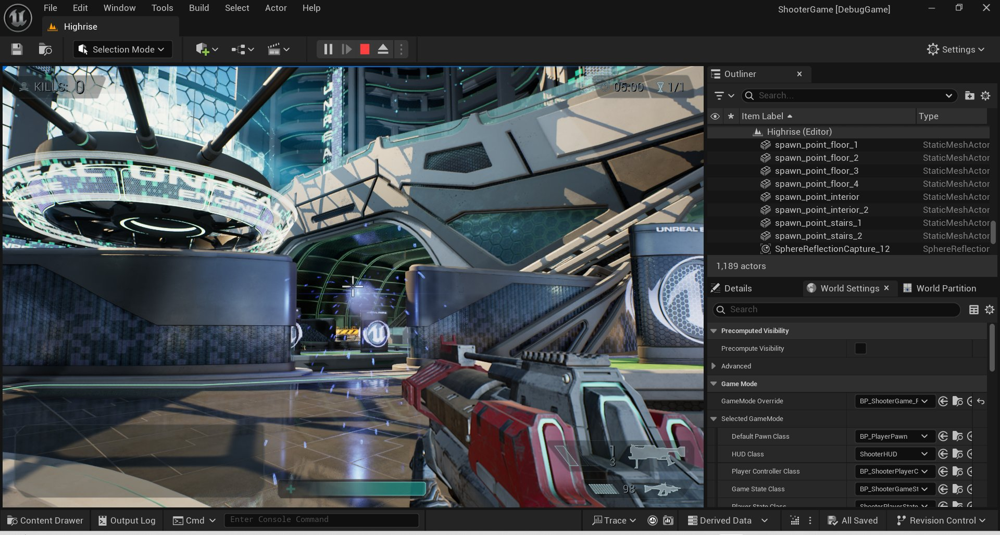
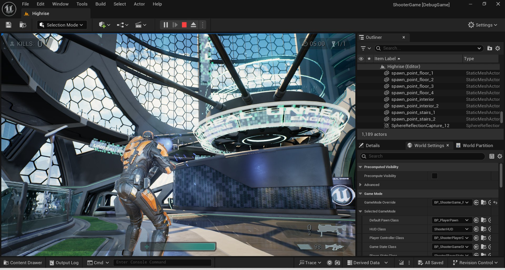
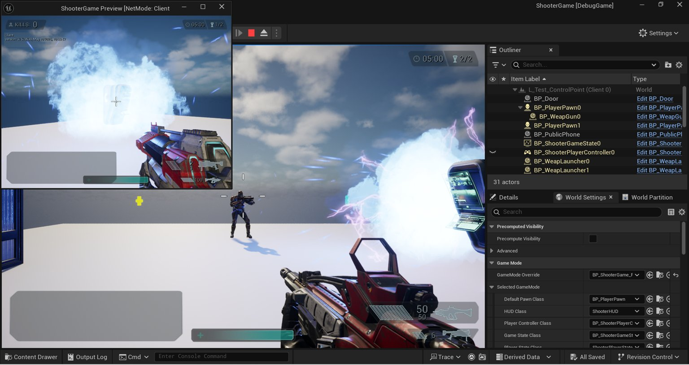
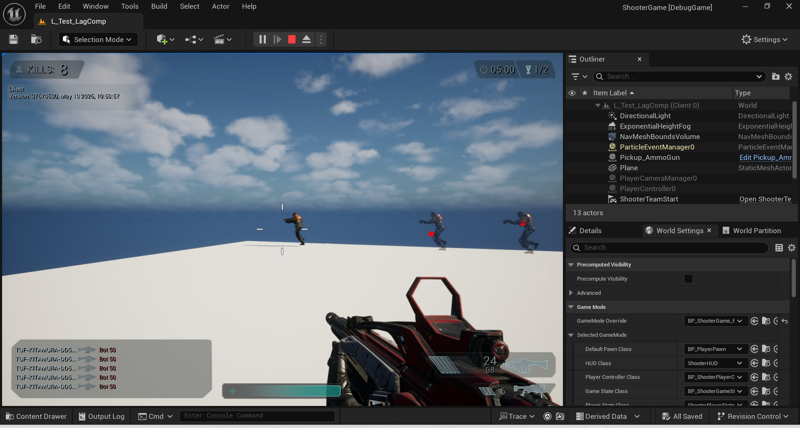
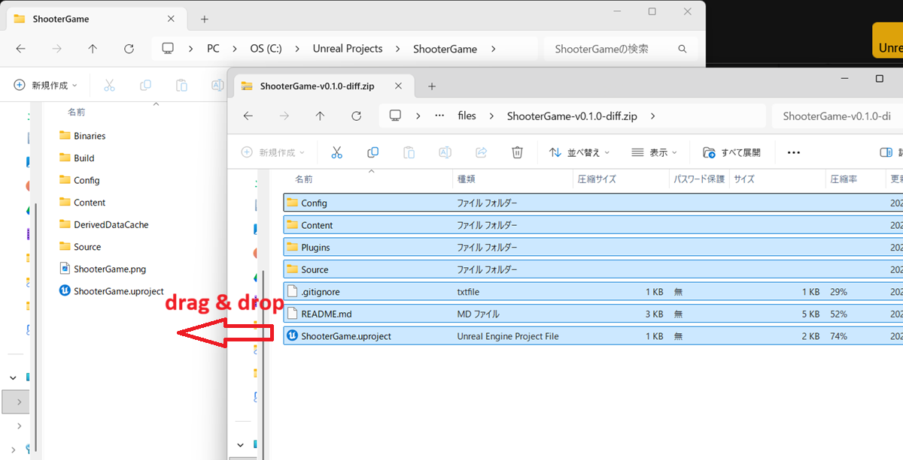
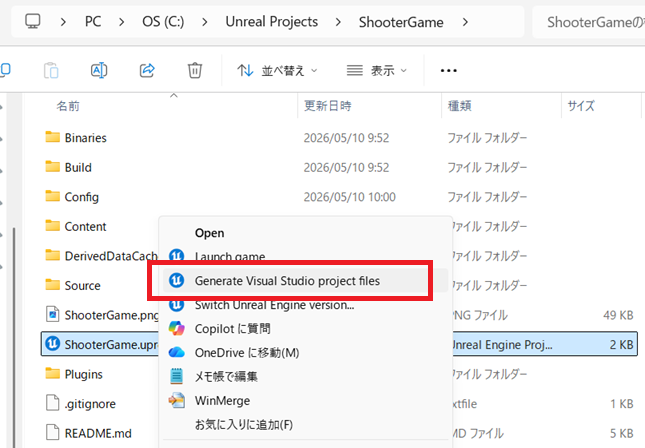
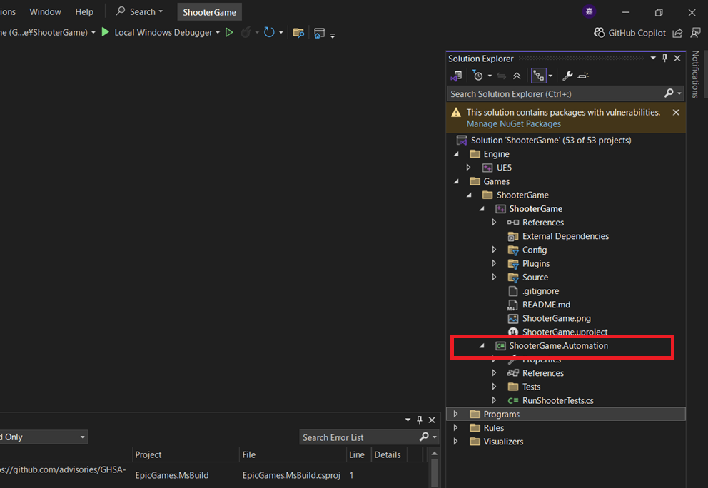

| Feature | Description |
|---|---|
| GAS-based Architecture | Migrated the entire ShootGame to the Gameplay Ability System (GAS) based. |
| Player Perspective Switching | Switching FPS/TPS player perspectives. Toggle with the "T" key. |
| Lag Compensation |
Instant Weapon: Confirm hit result on client by on server. Can show character's pose and impact point at the moment of hit on server to client side for debug. Projectile weapon: Synchonize launched projectile location on client and server. |
| Interaction with Other Actors | Interacting with actors on level (like doors, control points, etc.). |
| Damage Text Popup | Can display damage text when the opponent takes damage. |
|
 |
 |
|
 |
 |


